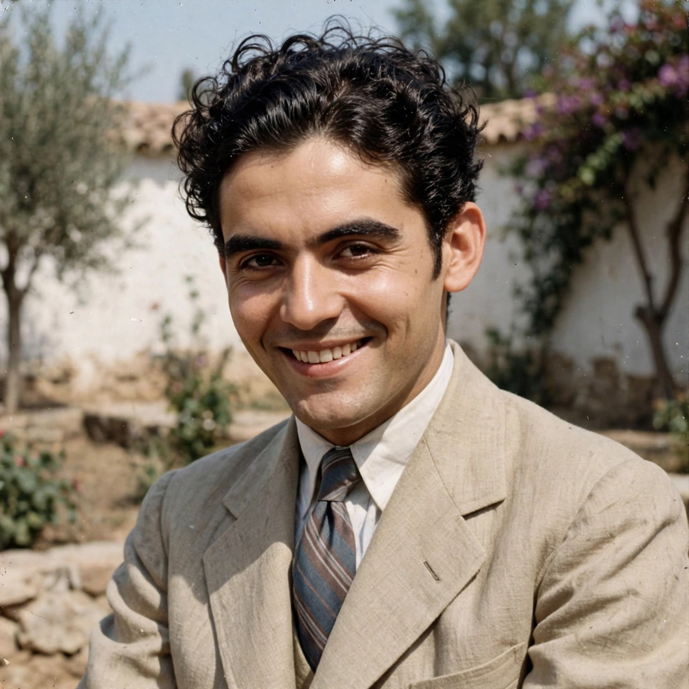

Federico García Lorca
From Wikipedia, the free encyclopedia

Federico del Sagrado Corazón de Jesús García Lorca (5 June 1898 – 19 August 1936) was a Spanish poet, playwright and theatre director, the most internationally acclaimed Spanish writer of the twentieth century. A leading figure of the Generation of '27, he fused Andalusian folk tradition with avant-garde experiment in poems such as Romancero Gitano (1928) and Poet in New York (written 1929–30), and in the rural tragedies Blood Wedding, Yerma and The House of Bernarda Alba. He was murdered by Nationalist forces at the outbreak of the Spanish Civil War; his body has never been found.
Life and work
Born near Granada to a wealthy landowner's family, Lorca studied in Madrid's Residencia de Estudiantes alongside Salvador Dalí and Luis Buñuel. His Gypsy Ballads made him famous across Spain; the New York sojourn (1929–30) darkened his poetry into surreal denunciation of mechanised capitalism. Under the Republic he directed the travelling student theatre La Barraca, bringing Golden Age classics to villages.
The rural trilogy and death
Blood Wedding (1933), Yerma (1934) and Bernarda Alba (finished June 1936) — tragedies of women crushed by honour, desire and repression in rural Spain — are his dramatic summit. Arrested in Granada days after the July 1936 rising (his homosexuality, leftist friendships and fame all marking him), he was shot with other prisoners near Víznar in August; Francoist Spain banned his works for decades. Searches for his grave (notably in 2009) have found nothing — his absence itself a symbol of Spain's unexcavated past.